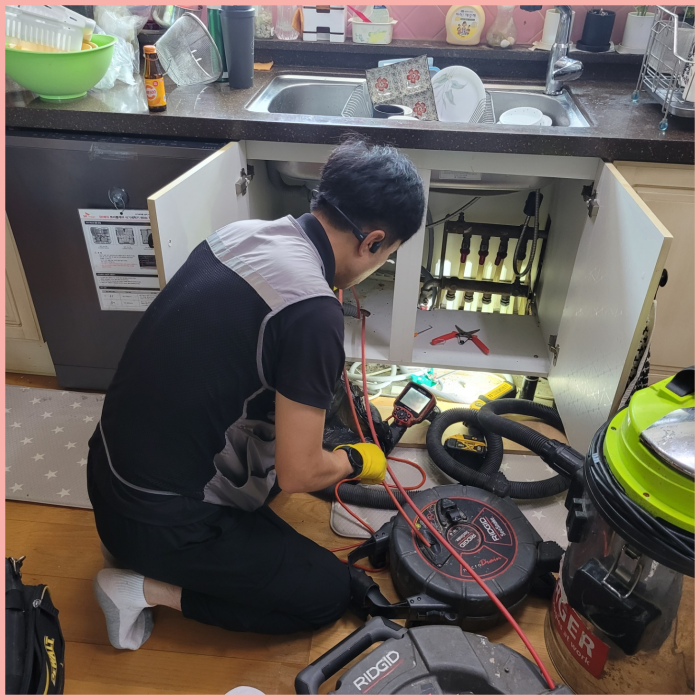
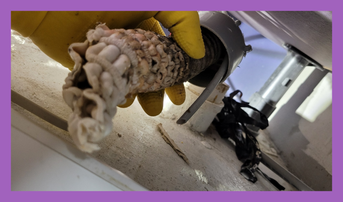
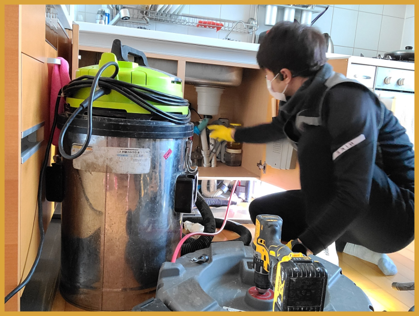
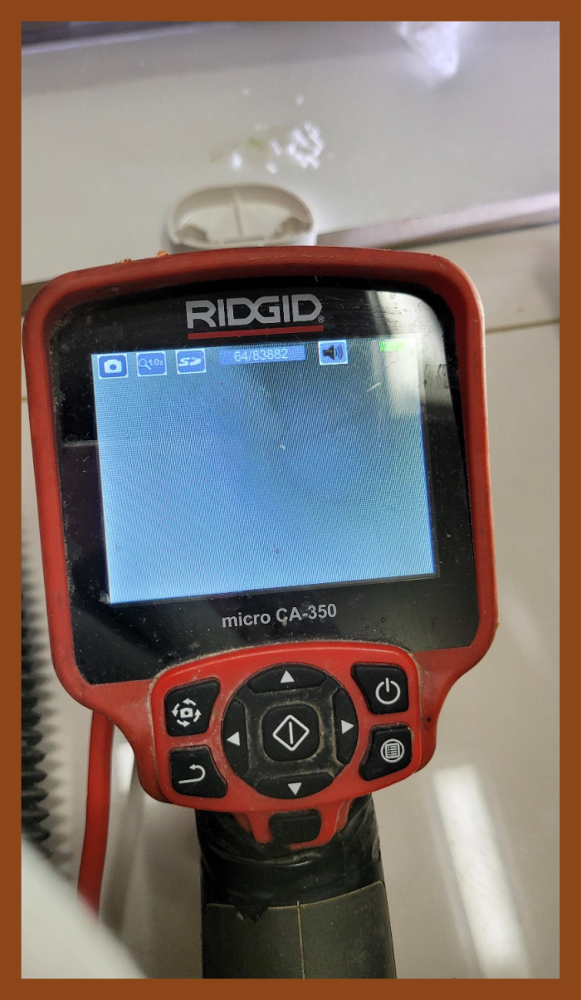
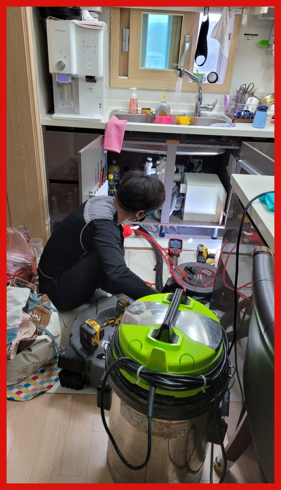
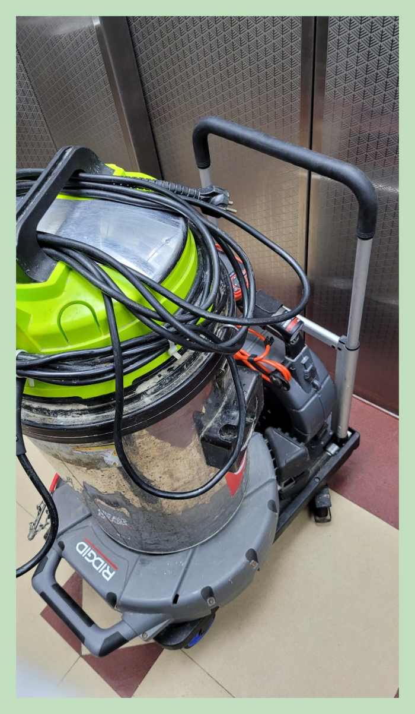

🏠 강남 세곡동 싱크대배수관막힘 하수구냄새 배관기름때 청소 설비
서울 싱크대막힘 전문 시공 후기

📋 작업 개요
- 위치: 서울
- 서비스 유형: 싱크대막힘, 변기막힘, 하수구막힘, 배관막힘, 누수수리, 역류해결, 뚫는업체, 배관청소, 고압세척
- 작업 일시: 2023. 12. 21. 1:00
- 업체명: 하수구수사대 (010-5615-2118)
🔍 문제 상황
반갑습니다!
설비전문업체 "하수구수사대"를 찾아주셔서 고맙습니다.
배수 문제의 원인은 다양하며, 클리너나 세제를 사용하여 해결하기 어려운 경우가 있습니다. 이때 플렉스 샤프트기를 사용하면 어떠한 상황에서도 효과적으로 배수을 청소할 수 있습니다. 하수관 막힘은 생활에 큰 불편함을 초래하므로, 빠른 대처가 필요합니다.
강남 세곡동 싱크대배수관막힘 하수구냄새 배관기름때 청소 설비
작업 시간은 고객님에게 맞춰서 진행하고 있기 때문에 배관 막힘으로 불편을 겪고 계신다면 언제든지 연락하여 주시면 어디라도 가리지 않고 출동하여 어려움을 해소해 드립니다.

🔎 원인 분석
💡 전문가 진단: 강남 세곡동 싱크대배수관막힘 하수구냄새 배관기름때 청소 설비
필요한 시공만 하기에 작업내내 고객님과 상의를 많이 한후 그에맞게끔 퇴수막힘 작업하고 있습니다. 그로인해 얼마든지 맡겨만 주시면됩니다. 퇴수를 뚫을때 변수가 워낙 다양하기 때문에 모든 퇴수배관을 파악한 후 무슨 장비를 이용할지 선택후 배관작업을 하기에 본격적으로 작업하기전 비용을 알려드리고 있어요.
이번 현장은 배관한 곳만 스케일링 소용이 없어서 반대쪽으로 이동하여 시도해 보았어요. 첫 번째로는 주름 호스에 납아 있던 노폐물들을 석션기를 이용하여 처리해 드렸어요. 하수 시원찮게 빠진다고 하시기에 욕실 배수구 쪽도 놓치지 않고 함께 보았어요.
너무 급한 생각에 급하게 행동을 취하고 여러 업체를 물어보고 이러다보면 더 지연되어 시간은 시간대로 흐르고 별로 좋지 않은 상황으로 이어지니 배수구막힘이 발행하면 고민하고 있기 보단 즉시 연락을 취하시길 추천드립니다.
대부분의 경우에는 제대로 배관막힘을 해결을 하지 못하고 또다시 막히거나 배관 손상으로까지 이어질 수 있게 되는 것입니다. 그러므로 빠르고 정확한 해결을 위해서는 전문 업체를 통해서 해결을 하시는 것이 필요합니다.
일단 자체적으로 해보고 안된다면 전문업체에 의뢰하는 것이 가장 이상적은 방법이라고 할 수 있어요. 하수도막힘으로 인해 문제가 생긴 다면 추후 더 골치 아파지는 상황이 발생할 수 있기때문입니다.

🔧 작업 과정
퇴수구뚫는 장비는 석션 작업은 필수적이고 샤프트와 석션의 장점을 잘 살려서 확실한 방향으로 작업을 진행해 주는 것입니다. 저희 업체에서는 퇴수구막힘이 재발하지 않도록 정확한 솔루션과 결과물을 드리고 있으며, 확실하게 뚫어드립니다.
이러한 이물질을 제거하기 위해서는 이물질 및 물을 제거하는 석션기를 이용해야 합니다. 그러고 나서 고압세척을 통해 배수구 내부 깊숙이 있는 덩어리를 제거해 주어야 해요.
갑자기물샘증상이 나타는게 하수도라서 1년동안은 당연하고 24시간언제든지 응대하고있어요. 배출구막힘 급하시다면 무슨상태이든지 신속하게내방하는곳이 간절할수밖에없어요.
경력없는사람이아닌 일정수준의 경력이있는사람들로만 뭉쳐있으며 같은기술력과 퇴수구기사님들은 출중한기술로 문의가오자마자 60분안에 도착보장해드리고있답니다.
이와같을때제일 중요한것이 공휴일에도 해결하는 전문설비회사일텐데요.저희배출구업체는위와 같은때를 사전에막고자 일년동안 항상근무하고있어요.도움이필요하신다면 언제든지의뢰가 가능하도록 낮밤상관없이 의뢰받고있습니다.
좋지않은곳은 하수뚫으면그만이라고 여겨버리고 재발되어버리면 무시하는일도 꽤많이있답니다.이러한것들이 차이가있기에 거의모든분들이 하수구가또 막혀버렸을때 연락을다시주시면 믿음에 보답하고자 성실하게 처리하고있습니다.
저희 업체는 다년간 쌓아온 여러 현장에서의 경험 및 노하우를 바탕으로 고객님들께 가장 빠르고 속 시원히 해결해 드릴 수 있는 배관 문제해결방법 및 예방법 등을 제시해 드리고 있습니다.
불편한 상황이 반복되고 있다면 그냥 내버려 두기보다는 배수구 전문설비업체에 의뢰하여 바로 뚫어서 해결하시기 바랍니다. 저희는 다양한 현장에 출동하여 정확하게 원인을 파악하고, 그에 알맞은 작업 방향을 잡아 문제를 해결해 드리고 있습니다.


✅ 작업 완료
계신 곳만 대참사가 일어나고 진전은 없으니 난잡해지기만 합니다. 저희 팀의 경우 10년 넘은 실력자들로만 뭉쳤기에 초보자의 방문은 절대 없습니다.
하수관문제 서울 전 지역으로 빠르게 출동해 드리며 고객님이 원하는 시간에 맞춰서 방문합니다. 신속하게 문제를 해결해 드리며 완벽하게 처리할 수 있도록 만족을 드리겠습니다
#하수구막힘 #하수구뚫음 #하수구역류 #씽크대막힘 #싱크대역류 #오수관막힘 #하수구청소 #욕실하수구막힘 #변기막힘 #하수구뚫는비용 #싱크대수리 #화장실막힘




⚠️ 베란다 누수 및 방수 관리 방법
- ✅ 비가 많이 올 때 창틀 주변이나 아래층 천장에 얼룩이 생기는지 정기적으로 확인해 보세요.
- ✅ 우수관 주변 실리콘 마감이 들뜨거나 깨진 틈새가 있는지 손상 여부를 수시로 체크하세요.
- ✅ 베란다 바닥 타일의 줄눈(메지)이 소실되면 그 틈으로 물이 침투하여 누수가 유발됩니다.
- ✅ 누수 의심 증상 발견 시 방치하면 아래층 손실이 커지므로 즉시 전문가의 진단을 받으십시오.
💡 핵심 정리
- 확실한 장비 작업(내시경 점검 및 샤프트 스케일링)으로 원인을 뿌리 뽑습니다.
- 작업 후 1년 이내에 동일한 부위 재발 시 100% 무상 A/S 서비스를 보장합니다.
- 서울 · 경기 · 인천 전 지역에 24시간 언제든 긴급 출동할 수 있도록 항시 대기 중입니다.
❓ 자주 묻는 질문 (FAQ)
🚨 서울 싱크대막힘 문제로 고민이신가요?
정확한 원인 진단과 확실한 시공으로 재발 없는 해결을 약속드립니다.
24시간 긴급 출동 | 서울 · 경기 · 인천 전지역 | 1년 내 재발 시 무상 A/S